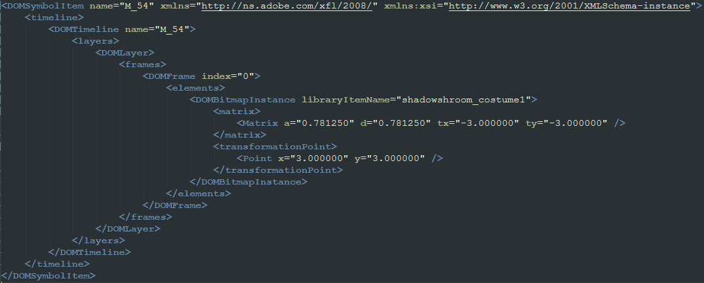

This community has more artists than people who can bring that art to life.
Today, I will teach you how to add costumes.
I have never done this before.
Oh, I forgot to tell you, I'm adding a costume to Shadow-Shroom.
For this, I'll get his _768, _1536 and _Common.
Open his spritesheets, I'll start off with 1536 for simplicity.
Take your costume and just fit it in comfortably.
Then, using your photo editor app, get his coordinates and dimensions.
This might seem weird, but I'm going to use Hypercube's Spritesplitter (Link)
Split the spritesheet with Option 1.
You'll see your costume is missing.
Head in .sprites.json
This is one of the sprites. Copy everything shown and then paste it.
Green is the sprite name, it doesn't matter what you call it as long as it is unique.
Blue and red are the coordinates from earlier. Put them in.
Ignore the last two numbers and save.
Delete the .sprites folder and split the spritesheet using Option 2.
If you did it correctly, you should be able to find your costume within the sprites!
Now convert the spritesheet back to PTX. Meanwhile, do everything for 768.
ALSO, do NOT delete the .sprites.json, you will need it for later.
Look who it is. The file that stores information about resources and spritesheets.
All we have to do is look for our plant this time.
Okay that's alot. Let me just focus on one sprite.
This.. looks familiar. It's almost the same as imageinfo!
Why don't we just... copy the values from imageinfo here?
Alright time to stop pretending being dumb.
This is why I told you to do ImageInfo. Just bring the values over from there.
You'll have to do the same but for the 768 version. It's not hard.
You need Adobe Animate now. I'm sorry, but I cannot give you any links.
Plus I don't have the greatest experiences with pirating stuff like this.
Search around the PvZ2 modding servers, you'll find it.
With that out of the way, go to _Common.
This is where the pain begins.
Extract the pam.
I'll be splitting this into multiple sections.
This folder stores sprites and their info and such.
Each M_ is mapped to a sprite, while each A_ is mapped to a M_.
For a costume, you need to add an M_ and a A_.
Copy some already existing ones and change their values using a text editor.
While you're here, you need sprites so you can view the animation.
Back to 1536 we go. Edit the imageinfo according to DomDocument.xml
For me, it was as simple as Find and Replace.
Save the imageinfo, split with Option 2, then take the sprites from the folder and put them in Library.
This file maps sprites and it also keeps track of all A_ and M_.
In short, copy, paste and replace!
Just from the fact this is a JSON, I can already tell it's something PvZ2 uses.
Oh! Coordinates! Wait.
These don't match the spritesheet size...
Yeah dummy, it's because they have their size (on the 1536 spritesheet) multiplied by 0,78125 and rounded.
There we go. Moving on.
Copy, paste and replace!
Now, for the SubAnimMapper, you have to copy, paste and replace!
Make your new A_ be mapped to "custom_02" or something. It doesn't really matter what.
Uh, this is awkward. But I need you to go there for a second.
This is the costume data. LayerName tells the animation which layer to show.
It has to be the same thing you mapped in OtherInfo.
Copy, paste and replace. AKA, unique ID, change the typename and the FriendlyName doesn't matter.
I left the worst for last. Sorry!
Open this file in Animate. Click here.
Create a new layer, rename it properly, and drag and drop your A_ to the canvas.
Convert this layer to a frame-by-frame animation, and then done. Save the animation.
Phew, almost died from Adobe poisoning. Let's get back on track.
Edit the DomDocument to include __ABOUT__="This XFL is convert from PAM file, By SPC-Util.", like so:
Use SPCUTIL to convert the entire folder back to PAM.
Now, convert everything you changed. And you should, hopefully, be good.
I love Shadow-Shroom.
This is a floating image however. I can't exactly teach you how to animate.